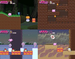
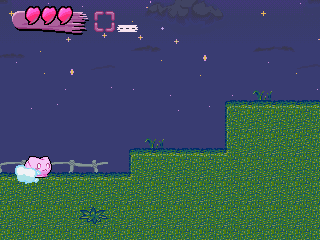

Skip to main content
itch.io
Browse Games
Game Jams
Upload Game
Developer Logs
Community
Log in
Register
Indie game store
Free games
Fun games
Horror games
Game development
Assets
Comics
Sales
Bundles
Jobs
Tags
Game Engines
VIPRPG 夏の陣 2026
Hosted by
viprpgfes_supporter
·
#VIPRPG_SUMMER_2026
34
Entries
Overview
Submissions
Community
Submission feed
A jam submission
こうもりさんの花物語 v1.2.1
View game page
Submitted by
akarmyu
(
@akarmyu
) — 42 days, 6 hours before the deadline
Report submission
Add to collection


Play game
こうもりさんの花物語 v1.2.1's itch.io page
Leave a comment
Log in with itch.io
to leave a comment.
Comments
No one has posted a comment yet


Comments
No one has posted a comment yet